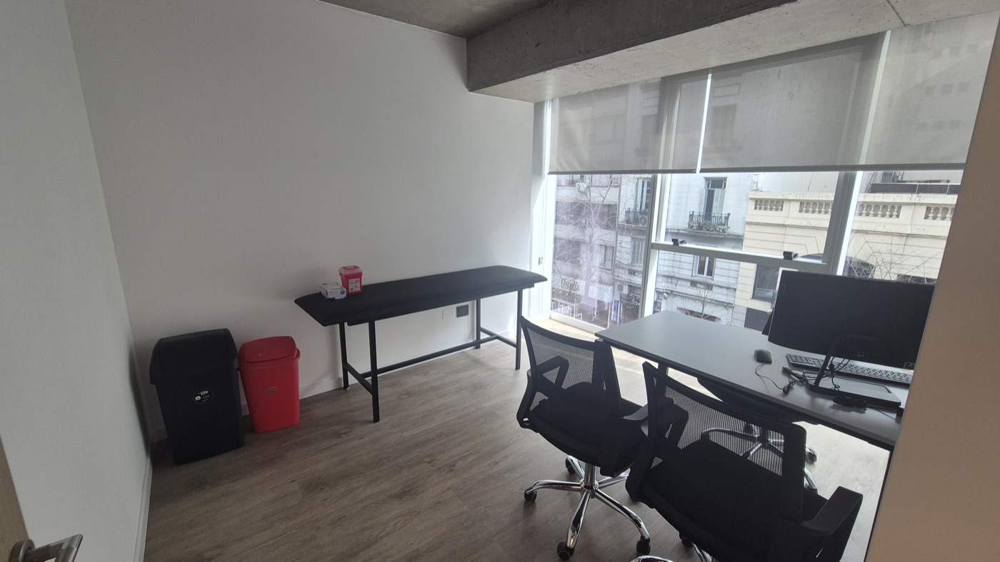
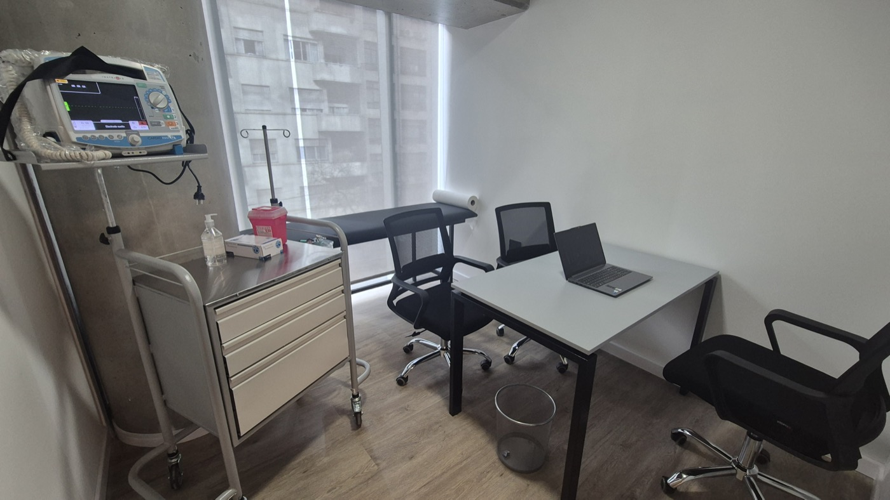
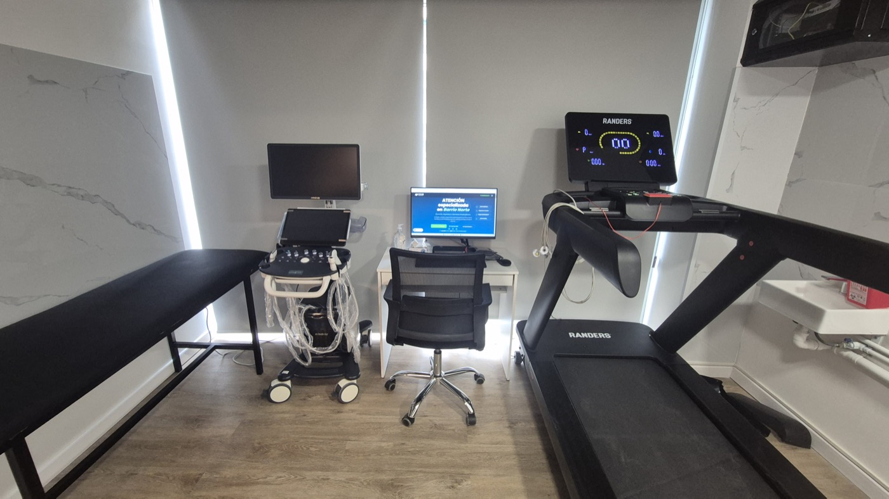
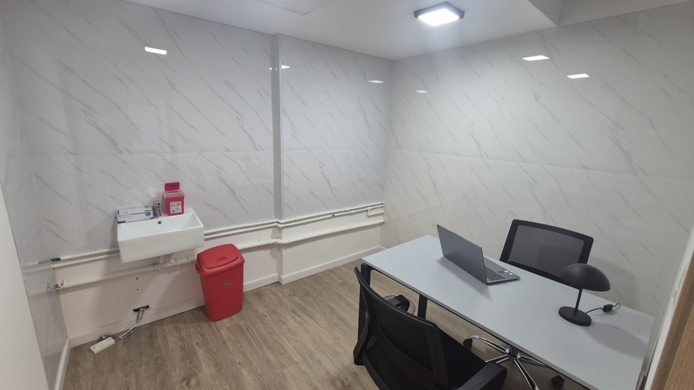
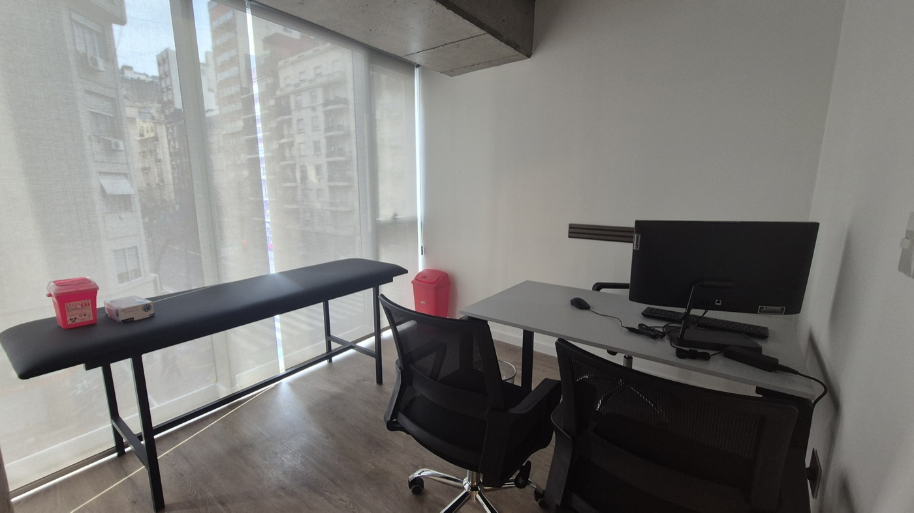
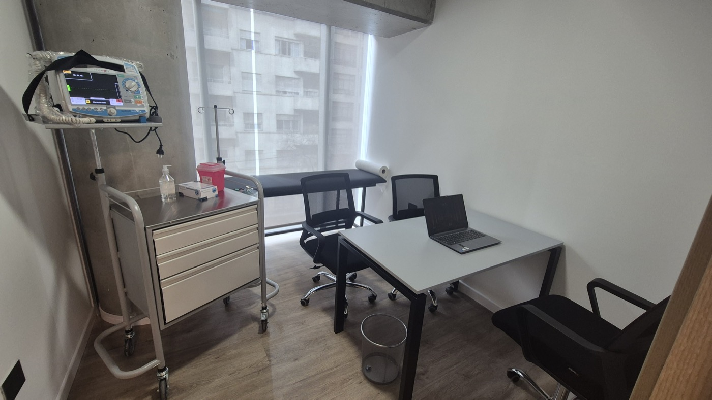

Nuestras instalaciones
Nuestros consultorios
Conocé dónde te vamos a atender. Espacios modernos y totalmente equipados, con tecnología de última generación, en un ambiente cálido y digital.





